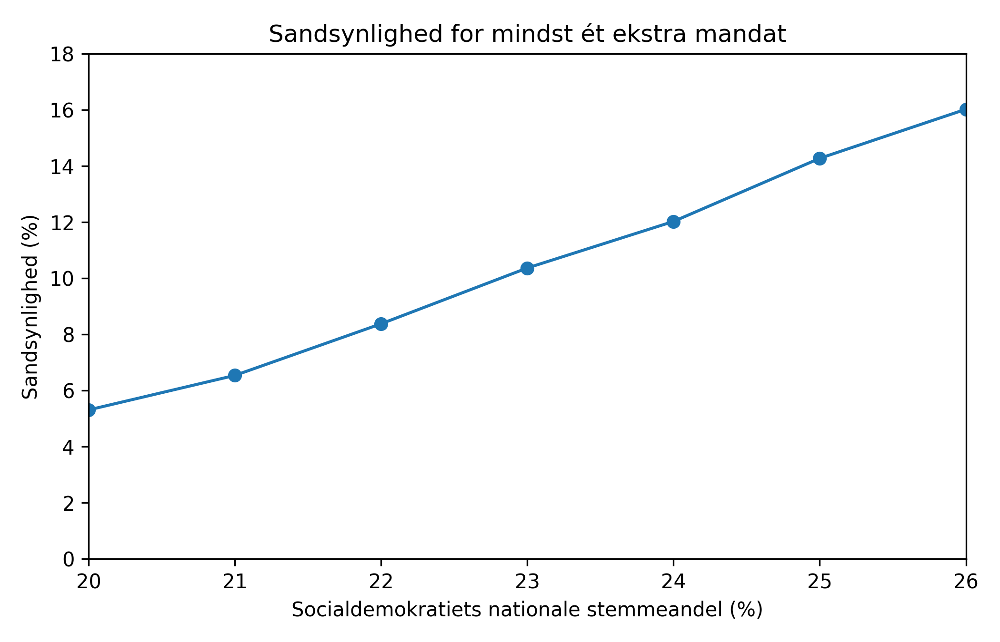
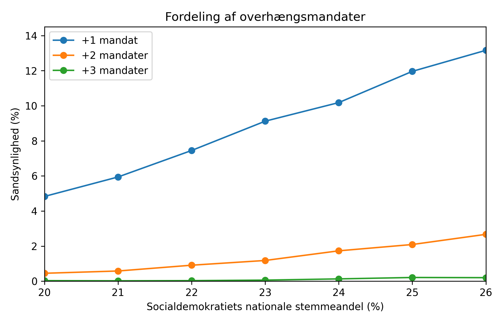

Får Socialdemokratiet et gratis mandat?
En teknisk detalje i valgloven kan i nogle tilfælde give landets største parti et ekstra mandat i Folketinget.
Hvad er problemet?
Det danske valgsystem er samlet set meget proportionalt. Men ikke perfekt. Kredsmandaterne fordeles med d’Hondts metode, som har en lille fordel til store partier.
I særlige situationer kan det føre til, at det største parti vinder flere kredsmandater, end partiet egentlig er berettiget til ud fra sit samlede stemmetal på landsplan. Når det først er sket, kan systemet ikke trække de mandater tilbage igen.
Resultatet er et overhængsmandat: et mandat, der i praksis lægger sig oven i den ellers proportionale fordeling.
- Det er ikke det mest sandsynlige udfald.
- Men det er heller ikke så usandsynligt, at det kan afskrives som teori.
- Og hvis det sker, vil det typisk være nok med ét mandat til at skabe reel politisk effekt.
Hvor sandsynligt er det?
Simulationerne peger på, at sandsynligheden for mindst ét overhængsmandat ligger omkring 5–16 procent, afhængigt af forudsætningerne. Det er med andre ord ikke et særtilfælde, man skal være ekstremt uheldig eller heldig for at observere.

Hvor meget kan det betyde?
I langt de fleste tilfælde er der tale om ét mandat. Men i dansk politik er ét mandat ofte alt andet end lille. Ét mandat kan være forskellen på, hvem der kan samle et flertal, hvem der står stærkest i forhandlinger, og hvordan valgets resultat bliver læst politisk.

Det ironiske ved historien
Den regel, der nu kan ende med at give Socialdemokratiet et ekstra mandat, blev ikke båret igennem af Socialdemokratiet.
Tværtimod stammer den afgørende ændring fra valglovsændringen i 2006, fremsat af Lars Løkke Rasmussen som indenrigs- og sundhedsminister og vedtaget af et flertal med Venstre, Dansk Folkeparti og Konservative.
Under behandlingen blev en spærreregel fjernet, som ellers skulle mindske risikoen for, at et parti kunne ende med flere mandater, end stemmetallet egentlig berettigede til. Flere partier advarede dengang mod, at den løsning kunne give overrepræsentation af store partier.
Så hvad er konklusionen?
Konklusionen er ikke, at Socialdemokratiet med sikkerhed får et gratis mandat. Konklusionen er, at reglen reelt kan producere det udfald, og at sandsynligheden er høj nok til, at man ikke bare kan slå det hen.
Hvis valget bliver tæt, er det ikke svært at forestille sig, at netop dette ene mandat pludselig bliver meget konkret. Så er spørgsmålet ikke længere bare teknisk. Så er det et spørgsmål om magt.